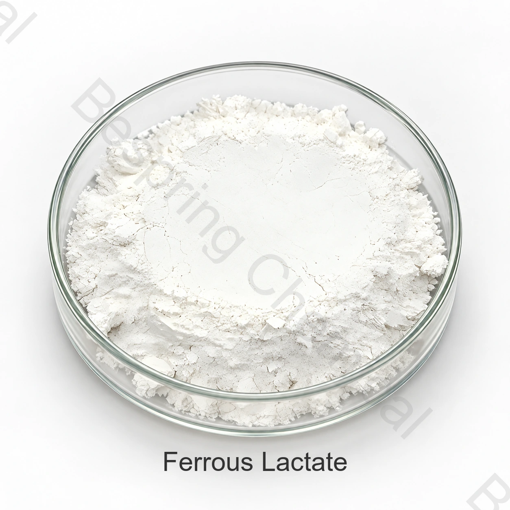

Форма и содержание железа
Уточните гидратную форму и основу анализа. Содержание соли и содержание элементарного железа — разные показатели; для сравнения предложений нужен единый расчёт.
Лактат железа(II) — соль молочной кислоты. Для пищевого применения необходимо подтвердить гидратную форму, содержание железа и назначение ингредиента. Выбор зависит от требований к цвету, вкусу и стабильности конкретного продукта.
INS 585 · гидратная форма уточняется в спецификации

Уточните гидратную форму и основу анализа. Содержание соли и содержание элементарного железа — разные показатели; для сравнения предложений нужен единый расчёт.
Оцените изменение цвета, вкус и стабильность в конкретном пищевом продукте. Условия хранения и окисление могут влиять на результат, поэтому одного анализа исходного порошка недостаточно.
Укажите, требуется ли минеральный ингредиент или стабилизатор окраски. Для выбранного применения согласуйте спецификацию, методы анализа и документы на фактически предлагаемый источник.
Укажите требуемый вклад железа и основу расчёта. Проверьте вкус, цвет и стабильность в готовой рецептуре.
Оцените допустимость конкретного применения и результат в пищевом продукте. Само наличие номера INS не определяет все разрешённые условия использования.
Запросите актуальную спецификацию, сертификат анализа партии и паспорт безопасности на предлагаемую марку.
Нет. Это разные показатели. Для расчёта вклада железа нужно знать состав и гидратную форму поставляемого продукта.
Укажите точный продукт, марку, применение, требования к качеству, количество, упаковку и место доставки.
Укажите точный продукт, марку, применение, требования к качеству, количество, упаковку и место доставки.